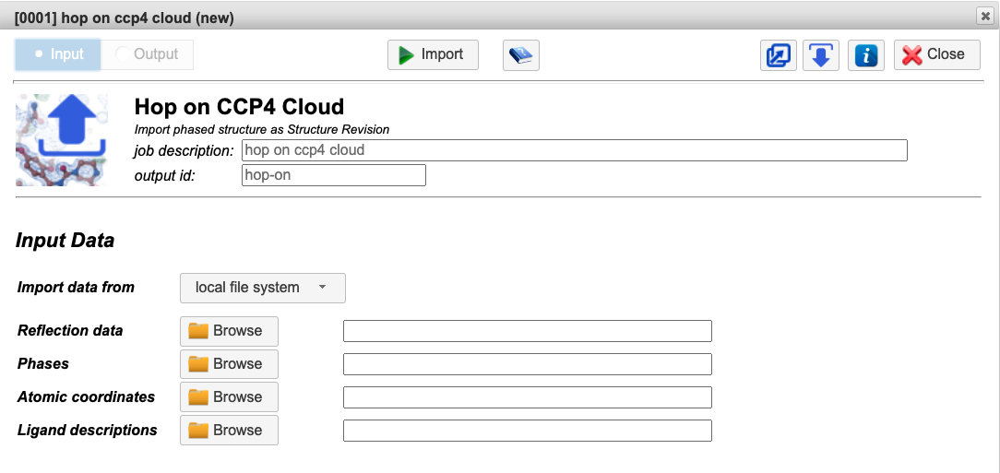

3.1. Work with CCP4 Cloud¶
This article describes how to start a project and load data in CCP4 Cloud.
To begin, ensure that you have a CCP4 Cloud account or have installed the CCP4 Software Suite (version 7.1 and above) (Download here).
Creating an account on CCP4 Cloud
3.1.1. Starting a Project¶
Step-by-step instructions on how to start a project in CCP4 Cloud can be found here.
In CCP4 Cloud, work is organized into Projects.
Press the  button above the project list to create your first project. Specify a short project name and a more descriptive title when prompted.
button above the project list to create your first project. Specify a short project name and a more descriptive title when prompted.
3.1.1.1. Manual mode¶
Standard mode provides full manual access to operating all tasks in the CCP4 Cloud task list. The system learns your preferences in the course of your work and will suggest new tasks in accordance with your habits. Automatically suggested tasks appear in the Suggested tab of the Task list.
CCP4 Cloud includes several data import tasks:
- Data Import
- Import Sequence(s) by Copy-Paste
- Import from PDB/AFDB
- Import from Cloud Storage
- Import & Replace
- Hop on CCP4 Cloud
- Fetch Diffraction Images from WWW repositories
- Push to Cloud Storage
3.1.1.2. Automated Structure Solution¶
Project plans correlate to existing automatic workflows
Available project plans include:
- Molecular Replacement using AlphaFold model
- Molecular Replacement using structure databases
- Molecular Replacement using a known model
- Automatic Experimental Phasing
After selecting a plan, you will be prompted to upload data. If you have no data but wish to practice, choose CCP4 Cloud storage under Import data from.
Automation in CCP4 Cloud: Workflows
3.1.1.3. Import already solved structure for completion¶
This plan allows for a quick start from a phased (possibly partially built and refined) structure or heavy-atom substructure for further refinement and model building. This mode features a task list optimized to essential tasks for structure completion (can be switched to the full list). You can switch to the full task list at any time.
You will be directed to the Hop on task, where you should provide reflection data, phases, atomic coordinates, and ligand descriptions (if available).
{kind=link}
3.1.2. CCP4 Cloud Tutorials¶
Tutorials demonstrate structure solution techniques in CCP4 Cloud. They are presented as seed projects with pre-loaded data and include instructions that will guide you through the required project development stages. Tutorials can be imported into the account as new projects.
Available Tutorials:
- Data Processing and SAD Phasing
- Creating Molecular Replacement Search Ensembles with CCP4MG/MrBUMP
- The Multi-domain Molecular Replacement
- Structure Prediction for Molecular Replacement
- Protein-ligand Structure Determination by Molecular Replacement
- MR with Predicted Model
- Determining the Structure of Twinned Crystals Using Molecular Replacement
- GerE: SAD and MR-SAD Phasing
- Beta-Lactamase Experimental Phasing
- Simple Refinement
- Twin Refinement
- Ligand Dictionary Generation, Fitting & Refinement
- Paired Refinement with PaiRef
- Ligand Fitting with CCP4Cloud and Coot
- Fix up the Cyclin-Dependent Kinase with Moorhen
- Automated Model Building in CCP4 Cloud
- Starting PISA